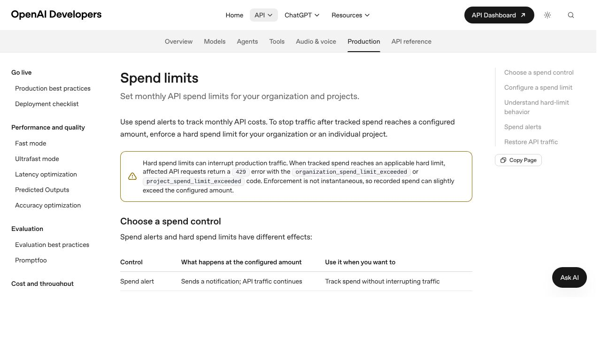
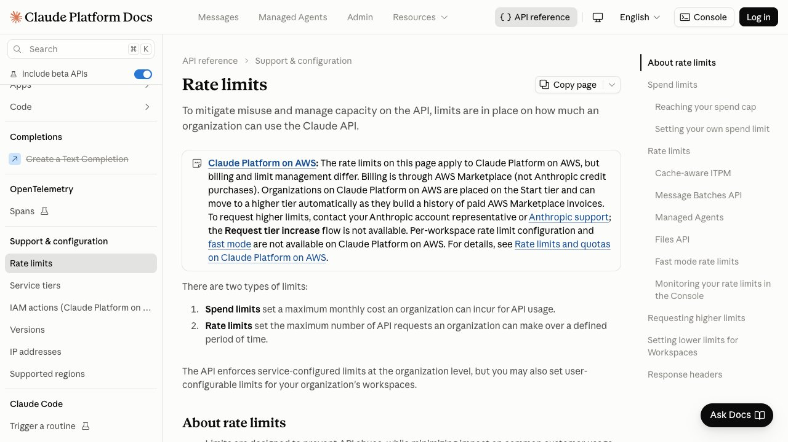

L a documentación de OpenAI resuelve en seis palabras la confusión que más dinero cuesta: «Spend alerts do not enforce a cap». Los avisos de gasto no imponen ningún tope. Te mandan una notificación y el tráfico sigue corriendo exactamente igual que antes. Mucha gente configura uno, ve el número en el panel y se queda tranquila pensando que ha puesto un freno. Ha puesto un espejo retrovisor.
La distinción importa poco mientras usas un chat, porque ahí el gasto va atado a tu velocidad de escritura. Importa mucho en cuanto montas un agente, porque un agente rompe ese vínculo: es él quien decide cuántas veces se llama. Esta guía recorre los dos sitios donde se ponen los frenos — el panel de cada proveedor y tu propio código — con la documentación de OpenAI, Anthropic y Google delante, y se detiene en un detalle que rompe más automatizaciones de lo que parece: hay dos errores 429 que se parecen mucho y que piden lo contrario el uno del otro.
1. Un agente no gasta como un chat
En una conversación normal el coste tiene un regulador natural, y eres tú: escribes, esperas, lees, vuelves a escribir. Aunque no lo pienses, estás marcando el ritmo de gasto con las manos. Un agente funciona al revés. Le das un objetivo y él decide cuántos pasos da para llegar — mirar un archivo, llamar a una herramienta, releer lo que ha encontrado, volver a intentarlo. Entre un paso y el siguiente no hay ninguna persona.
Hasta ahí es solo autonomía. Lo que convierte la autonomía en un problema de factura es la segunda propiedad, y es puramente aritmética: cada paso vuelve a enviar todo lo anterior. Los modelos no recuerdan nada entre llamadas; lo que llamamos «memoria» de una conversación es que el historial entero viaja otra vez en cada petición. Así que el paso 10 de tu agente no cuesta lo que costó el paso 1: cuesta más, porque incluye los nueve anteriores. El gasto de una ejecución larga no crece en línea recta, crece como una escalera que se empina.
Ahí es donde un fallo pequeño se vuelve caro. Si la condición de parada está mal escrita y el agente repite el mismo paso, no estás pagando N veces lo mismo: cada repetición es más cara que la anterior porque lleva dentro todas las repeticiones previas. Y hay una versión especialmente desagradable de lo mismo, el reintento «inteligente»: cuando tu código vuelve a intentar un paso que falló y además mete el mensaje de error en el contexto para que el modelo lo arregle, cada reintento es más grande que el intento que fracasó. El mecanismo pensado para recuperarse de un fallo es el que multiplica su coste.
Una cautela antes de seguir, porque es un género que se ha puesto de moda: circulan por ahí cifras llamativas de facturas de cuatro y cinco dígitos provocadas por bucles de agentes. Casi todas salen de blogs de empresas que venden justamente la herramienta para evitarlo, y no he podido contrastarlas en ninguna fuente independiente, así que no las vas a leer aquí con números. El mecanismo sí es real y es el de los tres párrafos anteriores; no hace falta mala suerte para activarlo, basta con una condición de parada optimista.
2. «Aviso» y «tope» no son la misma cosa
OpenAI separa los dos controles de forma explícita en su documentación. Un aviso de gasto manda una notificación cuando el gasto llega a una cifra y no hace nada más: el tráfico de la API continúa. Un tope duro sí corta. Son complementarios, no alternativos — lo razonable es tener los dos, con el aviso bastante por debajo del tope, para enterarte antes de que te corten y no por el corte.
El tope duro se puede poner a nivel de organización, de proyecto o de los dos a la vez. El de organización cubre el tráfico de todos los proyectos; el de proyecto solo lo que se factura a ese proyecto. Cuando salta, las peticiones afectadas devuelven un 429 con el código organization_spend_limit_exceeded o project_spend_limit_exceeded, según cuál de los dos hayas tocado.
Y hay una línea de letra pequeña que conviene leer dos veces, porque es la que decide dónde pones el número: la aplicación del tope no es instantánea, así que el gasto registrado puede superar ligeramente el importe configurado. Traducido a decisiones: el tope no se pone en la cifra que te arruinaría, se pone cómodamente por debajo. Si 500 € es el punto en el que tienes un problema serio, tu tope no es 500.
Existe además un tercer límite que no configuras tú: el límite mensual de uso que OpenAI asigna a cada organización según su nivel, independiente de los topes que pongas. Ese se identifica por organization_usage_limit_exceeded y no se arregla tocando tus ajustes — se arregla pidiendo que te lo suban. Merece la pena saber distinguirlo, porque la reacción instintiva ante un corte es ir a revisar la configuración propia, y en este caso ahí no hay nada que mirar.

3. Qué te deja poner cada proveedor
Los tres grandes resuelven esto de manera bastante distinta, y conviene saberlo antes de elegir dónde montas algo que va a correr solo. Este es el resumen de lo que dice la documentación de cada uno a 14 de octubre de 2026:
| Proveedor | Tope que puedes poner tú | Qué devuelve al llegar |
|---|---|---|
| OpenAI | Tope duro por organización y por proyecto, más avisos sin efecto sobre el tráfico | 429 con organization_spend_limit_exceeded o project_spend_limit_exceeded |
| Anthropic | Un límite propio por debajo del tope de tu nivel, y límites de gasto y ritmo por espacio de trabajo | 400 invalid_request_error si es el tuyo; 429 enforced_spend_limit_reached si es el del nivel |
| Google (API de Gemini) | Ningún ajuste propio documentado; la plataforma aplica un límite de gasto por ventana móvil de 10 minutos | 429 RESOURCE_EXHAUSTED |
En Anthropic cada nivel trae un tope mensual de serie: 500 dólares en Start, 1.000 en Build y 200.000 en Scale, mientras que el nivel Custom no lleva tope y se negocia aparte. Encima de eso puedes fijar tu propio límite en la página de facturación, siempre por debajo del tope de tu nivel. Si trabajas con espacios de trabajo, se les pueden poner límites individuales de gasto y de ritmo, con dos reglas que conviene memorizar: al espacio de trabajo por defecto no se le puede poner límite, y los límites de la organización mandan siempre, aunque la suma de los de los espacios dé más.
Google es el caso raro y el más interesante de los tres. No documenta ningún presupuesto que puedas configurar tú, pero aplica de oficio un límite de gasto sobre una ventana móvil de diez minutos — 10 dólares en el nivel 1, 50 en el 2 y 200 en el 3 — pensado explícitamente, dice la documentación, para protegerte de cargos inesperados. Es menos flexible y, para el caso concreto de un agente que se desboca a las tres de la mañana, bastante más protector que un tope mensual: diez minutos de bucle tienen un techo. Por encima quedan los topes de facturación de cada nivel, de 250, 2.000 y de 20.000 dólares en adelante.
La lectura práctica de la tabla es que ninguno de los tres te protege de lo mismo. El tope mensual evita que un mes malo se convierta en un mes catastrófico, pero no impide que un agente queme el presupuesto entero de octubre en una madrugada. Para eso hacen falta los frenos de la sección 6.
4. Dos errores 429 que parecen el mismo y piden lo contrario
Este es el detalle que más automatizaciones rompe, y es fácil de pasar por alto porque los dos errores comparten código HTTP y, en Anthropic, hasta el tipo de error: rate_limit_error. Uno significa «vas demasiado rápido, espera un momento». El otro significa «se acabó el presupuesto del mes». Reaccionar al segundo como si fuera el primero es tirar reintentos contra una puerta que no se va a abrir.
La señal que los separa es la cabecera retry-after. Un 429 de ritmo la trae, y te dice exactamente cuántos segundos esperar. El 429 de tope de gasto no la trae, y no se arregla esperando unos segundos: según la documentación de Anthropic, el acceso vuelve a las 00:00 UTC del primer día del mes siguiente, salvo que pidas subir de nivel antes. Para distinguirlos en código hay que mirar error.details.error_code: si pone enforced_spend_limit_reached, no es un problema de ritmo.
Esto importa más de lo que parece porque los SDK oficiales reintentan solos. La documentación lo dice sin rodeos: los reintentos, incluidos los automáticos del SDK, fallan hasta que el acceso se restablece. Es decir, si no distingues los dos casos, tu agente se quedará dando vueltas contra un muro, consumiendo sus propios reintentos y su presupuesto de tiempo, hasta que alguien mire los registros.
Hay todavía un tercer caso, y este ni siquiera es un 429: si el límite que se alcanza es el que tú configuraste, Anthropic devuelve un 400 de tipo invalid_request_error, con un mensaje que empieza por «You have reached your specified API usage limits». Un 400 nunca se reintenta — es una petición que está mal, no una que llegó en mal momento. La regla general que sale de aquí cabe en una línea: antes de reintentar un 429, mira el código de error concreto, porque no todos los 429 hablan de velocidad.
5. Reintentos: el freno que a veces es el acelerador
Para los 429 que sí son de ritmo, la receta está asentada y no tiene misterio: espera exponencial con un poco de aleatoriedad. Esperas 1 segundo, luego 2, luego 4, luego 8, y a cada espera le sumas un margen aleatorio pequeño. Lo aleatorio no es un adorno: sin él, todos los procesos que fallaron a la vez vuelven a la vez y se vuelven a tumbar entre ellos. Y si la respuesta trae retry-after, esa cifra manda por encima de tu cálculo.
Hay un detalle del funcionamiento interno que juega a tu favor y que conviene conocer: la API de Anthropic usa un algoritmo de cubo de fichas, de modo que tu capacidad se repone de forma continua en lugar de reiniciarse de golpe en intervalos fijos. Esperar un poco sirve de verdad; no estás aguardando a que den las en punto.
En la dirección contraria hay dos sorpresas que explican la mayoría de los «pero si estoy por debajo de mi límite». La primera: los límites por minuto pueden aplicarse en ventanas más cortas — la propia documentación pone el ejemplo de que 60 peticiones por minuto se apliquen como 1 por segundo. Un agente que lanza sus veinte llamadas de golpe puede fallar aunque su media por minuto sea bajísima; la solución es repartirlas, no subir el límite. La segunda: existen límites de aceleración que saltan cuando el uso de una organización pega un salto brusco, aunque estés por debajo de los límites publicados. Si vas a multiplicar tu tráfico, súbelo poco a poco en vez de encender todo a la vez.
Por último, y enlazando con la sección 1: pon un techo al número total de reintentos y al tiempo total que se pueden pasar reintentando. Si además tu código añade el error al contexto para que el modelo corrija, limita cuántas veces hace eso. Tres intentos que arrastran los dos errores anteriores ya son una llamada sensiblemente más cara que la original, y a partir de cierto punto estás pagando cada vez más por un fallo que no va a dejar de serlo.
6. Los frenos que solo puedes poner tú
Todo lo anterior vive en el panel del proveedor y protege el mes. Ninguno de esos controles sabe qué es «una ejecución» de tu agente, así que ninguno puede pararla. Eso solo lo puedes hacer tú, en el código, y son cuatro cosas bastante sencillas que casi nadie monta hasta que ya ha pagado por no tenerlas.
Un presupuesto por ejecución. Lleva la cuenta de los tokens que vas gastando en la tarea y corta al llegar a un número. El detalle que lo hace funcionar: comprueba el presupuesto antes de cada llamada, no después. Comprobarlo después significa que siempre te pasas, y en la llamada más grande, que es la última.
Un máximo de pasos. Un número fijo de iteraciones, por encima del cual el agente se para aunque crea que no ha terminado. «Se parará cuando acabe» no es un límite, es una esperanza. Mide cuántos pasos necesita tu tarea cuando va bien, multiplica por dos o tres, y ese es tu techo.
Un reloj. Un tiempo máximo para la ejecución completa, no solo para cada petición. Los tiempos de espera por llamada no protegen de nada cuando el problema es que hay diez mil llamadas rápidas.
Un detector de repetición. Si el agente ejecuta dos o tres veces seguidas la misma acción con los mismos argumentos, páralo. Los bucles reales casi nunca son creativos: son literalmente la misma llamada otra vez. Comparar la acción actual con las dos anteriores es media docena de líneas y ataja el caso más caro de todos.
A esos cuatro añade dos costumbres de organización. Una: un interruptor de apagado — una variable que el agente consulta antes de cada paso y que tú puedas cambiar sin desplegar nada, para poder pararlo desde el móvil. Dos: una clave, proyecto o espacio de trabajo distinto por agente, para que el que se desboque no se coma el presupuesto de los demás y para que el corte te diga, por sí solo, cuál ha sido. Es justo para esto para lo que sirven los proyectos de OpenAI y los espacios de trabajo de Anthropic, recordando que el límite de la organización manda siempre por encima. Si quieres el contexto de qué sale caro y por qué, está en cuánto cuesta de verdad usar la IA por API; y si lo que te preocupa es que el agente haga algo irreversible y no solo caro, el repaso de los errores más comunes al automatizar con IA cubre esa otra mitad.
7. La caché cambia la aritmética
Un agente es el caso de libro para la caché de contexto, y la razón es la que vimos en la sección 1: en cada paso reenvía exactamente las mismas instrucciones de sistema y las mismas definiciones de herramientas. Ese prefijo es idéntico vuelta tras vuelta, así que es dinero que se paga muchas veces por el mismo texto.
Más allá del precio, la caché cambia también los límites de ritmo, y esto es menos conocido: en la mayoría de los modelos de Claude solo los tokens de entrada no cacheados cuentan para el límite de tokens de entrada por minuto. Los que se leen de caché no cuentan — la excepción documentada es Claude Haiku 3.5. El ejemplo que da la propia documentación: con un límite de 2 millones de tokens de entrada por minuto y un 80 % de aciertos de caché, puedes mover unos 10 millones de tokens totales por minuto, porque los 8 millones cacheados no suman.
Aquí hay una trampa contable que conviene conocer si vas a medir tu propio gasto: el campo input_tokens no son todos los tokens de entrada, sino solo los posteriores a tu último punto de caché. El total se calcula sumando los tres campos — los leídos de caché, los escritos en caché y ese input_tokens. Con un documento grande cacheado, el campo puede marcar 50 mientras la entrada real ronda los 200.000. Si construyes tu contador de presupuesto sobre el campo suelto, vas a creer que gastas una fracción de lo que gastas.
Un último apunte que ahorra una preocupación inútil: el parámetro max_tokens no cuenta para el límite de tokens de salida por minuto, que se mide sobre los tokens realmente generados. Ponerlo generoso no te penaliza en los límites de ritmo, y sigue siendo útil como tope de seguridad de una respuesta concreta.
8. Lo que puedes vigilar sin montar nada
Antes de instalar ninguna herramienta de observabilidad, tienes información gratis en cada respuesta de la API. Anthropic devuelve cabeceras con el límite vigente, lo que te queda y cuándo se repone: anthropic-ratelimit-requests-remaining, las equivalentes de tokens de entrada y de salida, y las de reposición en formato RFC 3339. Guardarlas en tus registros cuesta una línea y convierte un «falla a veces» en un dato: si lo que queda baja a cero antes de acabar el minuto, ya sabes qué va a pasar y por qué.
Dos matices sobre esas cabeceras. Reflejan el límite más restrictivo que está actuando, que puede ser el del espacio de trabajo y no el de la organización; y la cabecera anthropic-workspace-id te dice contra qué espacio se ha contado la petición, que es justo lo que querrás saber cuando tengas varios agentes separados. Si prefieres leer los límites configurados en vez de deducirlos, hay una API de límites de ritmo que los devuelve, y la página de uso de la consola trae gráficas de tokens de entrada y salida y del porcentaje de aciertos de caché.
En Gemini hay dos detalles que despistan si vienes de otro proveedor. El primero: los límites son por proyecto, no por clave, así que sacar una segunda clave no te da más margen — es un error que se comete a menudo cuando empiezan los 429. El segundo: el límite de peticiones por día se reinicia a medianoche del Pacífico, que no es tu medianoche; si tu proceso nocturno se queda sin cuota siempre a la misma hora rara, ahí tienes la explicación.
Todo esto son límites y contadores, no calidad. Que un agente no se pase de presupuesto no dice nada de si hace bien su trabajo, y las dos cosas se vigilan por separado: para la segunda, cómo saber si tu agente funciona de verdad. Y si estás decidiendo cuántos agentes montar, conviene saber que repartir el trabajo entre varios multiplica también el contexto que cada uno arrastra — el cálculo está en varios agentes o uno solo.
9. La lista antes de dejarlo solo
Si vas a dejar un agente corriendo sin nadie delante, estas son las comprobaciones que cubren la mayor parte del riesgo económico. Ninguna lleva más de un rato:
- Un tope duro configurado, no solo un aviso — y puesto por debajo de la cifra que te dolería, porque la aplicación no es instantánea.
- Un aviso además del tope, en torno a la mitad, para enterarte antes del corte.
- Clave o proyecto propios para este agente, separados de lo demás.
- Presupuesto de tokens por ejecución, comprobado antes de cada llamada.
- Máximo de pasos y tiempo máximo de ejecución, los dos.
- Detector de acción repetida con los mismos argumentos.
- Reintentos con espera exponencial y aleatoriedad, con techo de intentos y de tiempo.
- El código comprueba el tipo de 429 antes de reintentar, y no reintenta nunca un 400.
- Las cabeceras de límite quedan guardadas en los registros.
- Un interruptor para pararlo sin desplegar.
Una nota final sobre la caducidad de todo esto: los niveles, los topes y los códigos de error cambian cada pocos meses, y algunos han cambiado en el último año. Las cifras de esta guía son las que publicaban OpenAI, Anthropic y Google el 14 de octubre de 2026. Los mecanismos — avisos que no frenan, dos 429 distintos, el contexto que se acumula — son bastante más estables que los números, pero antes de confiarle dinero a una configuración, ábrele la página de documentación de tu proveedor y compruébalo.
Un bucle con números: cuánto cuesta ir de 20 a 100 pasos
Supón un agente con 3.000 tokens fijos de instrucciones y herramientas, y cada paso añade 1.500 tokens de resultados al historial. Como cada llamada reenvía todo lo anterior, la entrada del paso n es 3.000 + 1.500 × (n − 1). Sumando todos los pasos:
| Pasos | Tokens de entrada acumulados | Coste de entrada a 2 $/M (como Sonnet 5.5) | A 0,10 $/M (como Haiku 5.5) |
|---|---|---|---|
| 5 | 30.000 | 0,06 $ | 0,003 $ |
| 20 | 345.000 | 0,69 $ | 0,0345 $ |
| 100 | 7.725.000 | 15,45 $ | 0,77 $ |
Cálculo: 3.000 × n + 1.500 × n × (n − 1) / 2. Pasar de 20 a 100 pasos multiplica los pasos por 5 y el gasto de entrada por unos 22. Es un ejemplo con supuestos redondos (sin caché, solo entrada, sin contar la salida ni las herramientas de pago), pensado para ver la forma de la curva, no para presupuestar. Precios por millón de tokens según la página de precios de Anthropic. Con caché de contexto, la parte repetida se lee a una fracción del precio (0,10 $/M en Sonnet 5.5), lo que aplana mucho la curva: por eso compensa la sección 7.
Presupuestos de sesión: el tope de dólares que ya viene hecho (Anthropic, beta)
Si usas Claude Managed Agents (el servicio de Anthropic para ejecutar agentes en su nube, en beta), existe un freno que antes tenías que programar: el presupuesto de sesión. Según la documentación:
- Se fija al crear la sesión, en céntimos de dólar (por ejemplo, 125 = 1,25 $), y no se puede añadir después a una sesión que no lo tenga.
- La plataforma calcula el coste de la sesión con precios de lista (tokens, búsquedas web y tiempo de ejecución) y, antes de cada petición al modelo, comprueba si se ha alcanzado el tope.
- La petición en curso cuando se cruza el tope termina, así que el gasto puede pasarse una fracción: como mucho, el coste de una petición por cada hilo activo.
- Al llegar al tope, la sesión se pausa (estado inactivo con motivo
budget_reached), no se destruye. Subir o quitar el tope la reanuda. - En sesiones con varios agentes hay un único presupuesto compartido por todos los hilos.
- No sustituye a tus límites de código: es un tope de dólares por sesión, no un detector de bucles.
Fuente: documentación de presupuestos de sesión. Los flujos que lanzan muchos agentes (hasta 1.000 por ejecución, según nuestra noticia) hacen este tipo de tope especialmente útil. Si tu proveedor no ofrece algo equivalente, el presupuesto por ejecución en tu código de la sección 6 cumple la misma función.
Precios de referencia para calcular tu tope
Tabla de precios oficial de Anthropic a 17 de octubre de 2026, por millón de tokens, para estimar el gasto de un agente:
| Modelo | Entrada | Salida | Lectura de caché |
|---|---|---|---|
| Claude Haiku 5.5 (prompts de hasta 100.000 tokens) | 0,10 $ | 0,50 $ | 0,01 $ |
| Claude Sonnet 5.5 | 2 $ | 10 $ | 0,10 $ |
| Claude Opus 5.5 | 4 $ | 20 $ | 0,20 $ |
| Claude Fable 5.1 | 10 $ | 50 $ | 0,25 $ |
Para OpenAI, la página oficial de GPT-6.1 Sol indica 2 $ de entrada, 10 $ de salida y 0,10 $ de entrada en caché (ficha del modelo). Dos cosas más de la documentación de Anthropic que afectan a tu presupuesto: la API por lotes tiene un 50 % de descuento en entrada y salida (precios por lotes), y las organizaciones nuevas pueden empezar en un nivel de evaluación con límites por debajo de los estándar (límites de ritmo). Para la comparación completa de costes, mira cuánto cuesta usar IA por API; para la fórmula con un caso de facturas, la guía de automatización. Los precios cambian: compruébalos antes de fijar un tope.
Una aclaración que evita confusiones: la noticia de que Gemini gratis queda limitado a Flash-Lite desde el 9 de octubre se refiere a la aplicación de Gemini para cuentas personales, no a la API para desarrolladores (la noticia). Para los límites de la API de Gemini, la tabla de la sección 3 sigue la documentación de Google.